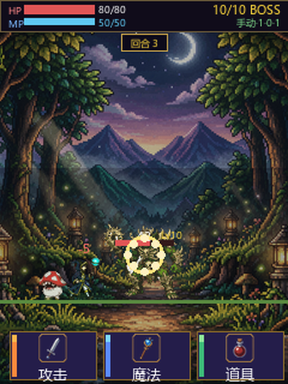
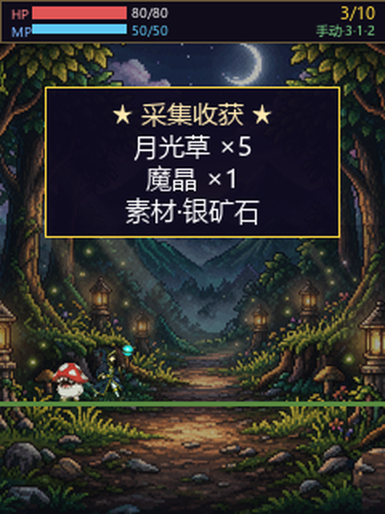

主角法师（左下持杖小人）≈ 屏高 1/9；BOSS 哥布林明显比主角大，是正常 RPG 比例。

主角完整可见（头没被裁）；左下角小蘑菇是出战伙伴，本就比主角小。
左→右：t0 棕袍(见习) → t1 蓝袍 → t2 紫袍 → t3 金白魔法帝。rank 0-1/2-3/4-5/6 自动切换。
| 角色 | 之前（72cfd46） | 现在（待烧） | 依据 |
|---|---|---|---|
| 主角法师 | 96×123（比怪大2~3倍） | 28×36（≈屏1/9） | 你认可的图2尺寸 |
| 出战伙伴·蘑菇 | 48×50 | 24×25（约主角0.67倍） | 宠物本应比主角小 |
| 史莱姆 / 哥布林 / BOSS | 32 / 40 / 64 | 不变 | 你要求怪物大小不变 |
✅ 界面改动先出对比图（本回合"烧"前已出图）
✅ 中文文案无新增缺字（"长按OK 关闭"沿用已校验）
✅ LVGL 铁律：主角 96→28×36，显存更小；精灵尺寸==绘制 h_pix，不触发删对象空白
✅ Flash 预算：精灵表 5.01MB，远小于 8MB
➖ 命名/不抄袭/难度/故事书：本轮仅改尺寸，不涉及